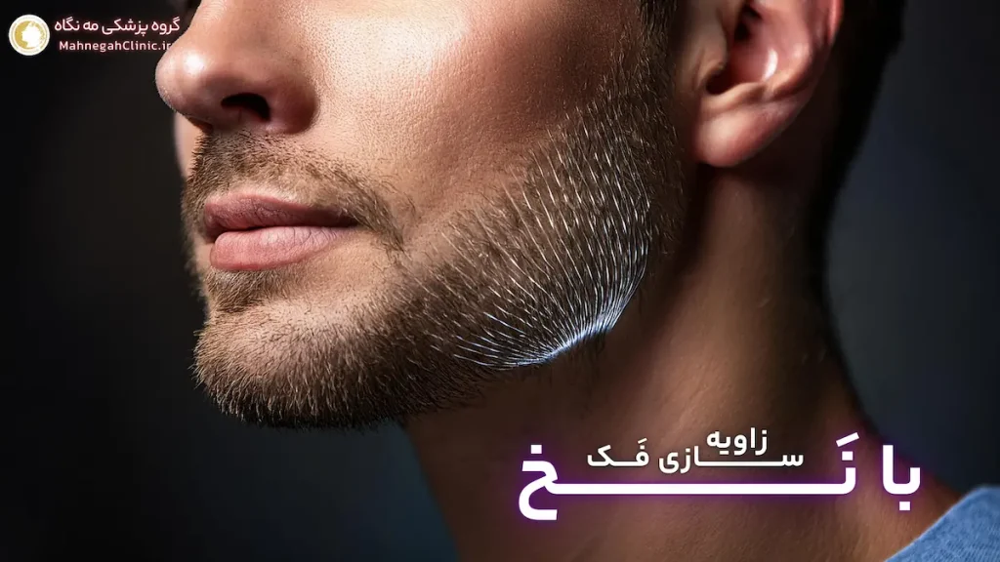
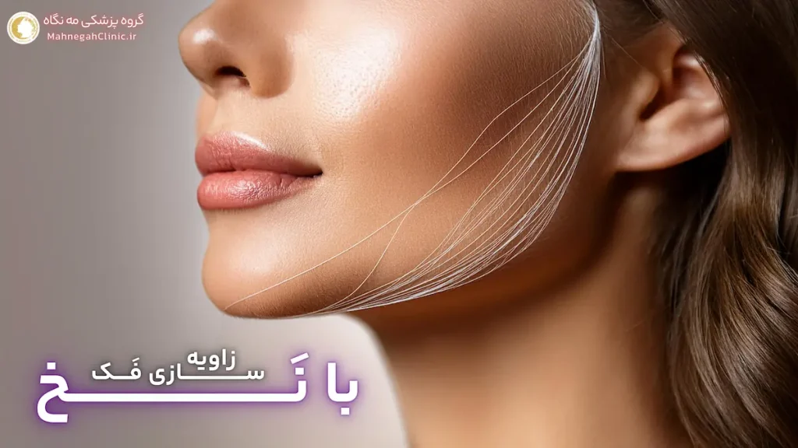
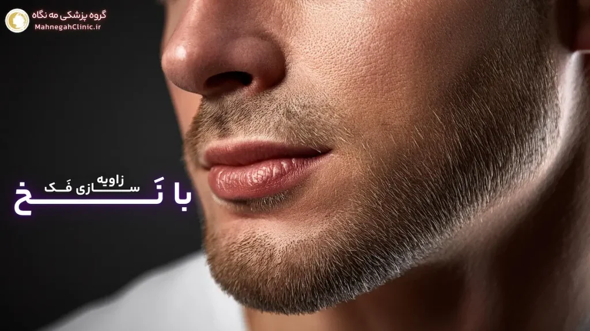

خانه / مجله / زاویه سازی فک
زاویه سازی فک با نخ: روشی غیرجراحی برای داشتن فک زاویه دار

1. زاویه سازی فک با نخ چیست؟
زاویه سازی فک با نخ یک روش غیرجراحی و کم تهاجم برای بهبود خط فک و ایجاد ظاهری خوشتراش و جوانتر است. در این روش، از نخهای مخصوصی که از جنس مواد زیست سازگار (معمولاً PDO یا پلی دی اکسانون) هستند، استفاده میشود.
این نخها در زیر پوست و در امتداد خط فک قرار داده میشوند و با ایجاد یک شبکه حمایتی، پوست و بافتهای صورت را لیفت میکنند و به فک زاویه و برجستگی بیشتری میبخشند.
تعریف زاویه سازی فک با نخ و نحوه عملکرد آن
در زاویه سازی فک با نخ، پزشک ابتدا نقاط ورود و خروج نخها را بر روی پوست مشخص میکند. سپس، با استفاده از سوزنهای بسیار ظریف، نخها را در زیر پوست و در امتداد خط فک قرار میدهد.
این نخها دارای خارها یا برجستگیهای کوچکی هستند که به آنها کمک میکند تا در بافتها گیر کنند و از لیز خوردن آنها جلوگیری کنند. پس از قرار دادن نخها، پزشک آنها را به آرامی میکشد تا پوست و بافتهای صورت را لیفت کند و به فک زاویه و برجستگی بیشتری ببخشد.
مزایای زاویه سازی فک با نخ نسبت به سایر روشها
- غیرجراحی و کم تهاجم: این روش نیازی به بیهوشی عمومی یا برشهای بزرگ ندارد و دوره نقاهت آن بسیار کوتاه است.
- نتایج فوری: نتایج زاویه سازی فک با نخ بلافاصله پس از درمان قابل مشاهده است و شما میتوانید از چهره جدید خود لذت ببرید.
- تحریک تولید کلاژن: نخهای PDO باعث تحریک تولید کلاژن در پوست میشوند که به مرور زمان باعث سفت شدن و جوانسازی پوست میشود.
- ماندگاری قابل قبول: نتایج این روش معمولاً بین 1 تا 2 سال ماندگاری دارند.
- ایمن و کمعارضه: عوارض جانبی این روش معمولاً خفیف و موقتی هستند و شامل تورم، کبودی و حساسیت میشوند.
- قابل انجام برای زاویه سازی فک مردان و زنان: این روش برای هر دو جنس مناسب است و میتواند به بهبود ظاهر فک و صورت کمک کند.
زاویه سازی فک با نخ یک گزینه جذاب برای افرادی است که به دنبال روشی سریع، ایمن و موثر برای بهبود خط فک خود هستند و تمایلی به جراحی ندارند.
با این حال، مهم است که قبل از تصمیمگیری در مورد این روش، با یک پزشک متخصص مشورت کنید و انتظارات واقعبینانهای از نتایج آن داشته باشید.
2. کاندیدای مناسب برای زاویه سازی فک با نخ چه کسانی هستند؟
زاویه فک با نخ یک روش کم تهاجم و موثر برای بهبود خط فک است، اما برای همه مناسب نیست. انتخاب درست کاندیدا برای این روش، تضمین کننده نتایج مطلوب و رضایت بخش خواهد بود. در این بخش، به بررسی شرایط سنی و جسمی مناسب برای این روش و همچنین انتظارات واقعبینانه از نتایج آن میپردازیم.
شرایط سنی و جسمی مناسب برای این روش
- سن: به طور کلی، زاویه ساز فک با نخ برای افراد بین 25 تا 50 سال مناسب است. در این سنین، پوست هنوز خاصیت ارتجاعی خود را حفظ کرده و میتواند به خوبی به لیفت با نخ پاسخ دهد.
- افتادگی خفیف تا متوسط پوست: این روش برای افرادی که دچار افتادگی خفیف تا متوسط پوست در ناحیه فک و گردن هستند، مناسب است. در موارد افتادگی شدید پوست، ممکن است نیاز به روشهای جراحی مانند لیفت صورت باشد.
- سلامت عمومی خوب: کاندیدهای ایدهآل برای این روش باید از سلامت عمومی خوبی برخوردار باشند و هیچ گونه بیماری زمینهای نداشته باشند که روند بهبودی را مختل کند.
- عدم وجود عفونت یا التهاب فعال در ناحیه درمان: در صورت وجود هرگونه عفونت یا التهاب فعال در ناحیه فک و گردن، باید ابتدا این مشکلات درمان شوند و سپس به زاویه فک با نخ پرداخته شود.
- عدم بارداری یا شیردهی: زاویه سازی فک با نخ برای زنان باردار یا شیرده توصیه نمیشود.
انتظارات واقعبینانه از نتایج زاویه فک با نخ
- بهبود خط فک: این روش میتواند به بهبود خط فک، ایجاد زاویه و برجستگی بیشتر در فک و کاهش غبغب کمک کند.
- لیفتینگ پوست: نخهای PDO باعث لیفتینگ پوست و بافتهای صورت میشوند و به جوانسازی ظاهر کمک میکنند.
- تحریک تولید کلاژن: نخها باعث تحریک تولید کلاژن در پوست میشوند که به مرور زمان باعث سفت شدن و بهبود کیفیت پوست میشود.
- نتایج موقت: نتایج زاویه سازی فک با نخ معمولاً بین 1 تا 2 سال ماندگاری دارند و پس از آن نیاز به تکرار درمان وجود دارد.
- نتایج طبیعی: این روش نتایج طبیعی و ظریفی ایجاد میکند و باعث تغییر شدید در ظاهر شما نمیشود.
اگر به دنبال یک روش غیرجراحی و کمتهاجم برای بهبود خط فک خود هستید و انتظارات واقعبینانهای از نتایج آن دارید، زاویه سازی فک با نخ میتواند یک گزینه مناسب برای شما باشد. با این حال، مهم است که قبل از تصمیمگیری در مورد این روش، با یک پزشک متخصص مشورت کنید و تمامی جوانب را به دقت بررسی کنید.
3. مراحل انجام زاویه سازی فک با نخ
زاویه سازی فک با نخ یک روش نسبتاً ساده و سریع است که معمولاً در مطب پزشک و تحت بیحسی موضعی انجام میشود. در ادامه به بررسی مراحل این روش میپردازیم:
مشاوره و ارزیابی اولیه توسط پزشک
- بررسی سوابق پزشکی و انتظارات شما: در جلسه مشاوره، پزشک سوابق پزشکی شما را بررسی میکند تا اطمینان حاصل کند که شما کاندید مناسبی برای این روش هستید. همچنین، در مورد انتظارات شما از زاویه سازی فک و نتایج مورد نظر صحبت میکند.
- ارزیابی آناتومی صورت: پزشک، آناتومی صورت شما را به دقت بررسی میکند تا نقاط مناسب برای قرار دادن نخها را مشخص کند و بهترین نتیجه را برای شما به ارمغان آورد.
- انتخاب نوع نخ: بسته به نیازها و شرایط شما، پزشک نوع مناسبی از نخهای PDO را انتخاب میکند. نخها میتوانند دارای ضخامتها، طولها و تعداد خارهای مختلف باشند.
نحوه قرار دادن نخها و مدت زمان انجام عمل
- بیحسی موضعی: قبل از شروع عمل، پزشک ناحیه فک و گردن را با بیحسی موضعی بیحس میکند تا در طول عمل احساس درد نداشته باشید.
- قرار دادن نخها: پزشک با استفاده از سوزنهای بسیار ظریف، نخها را در زیر پوست و در امتداد خط فک قرار میدهد. تعداد نخهای مورد نیاز به میزان اصلاح مورد نظر و آناتومی صورت شما بستگی دارد.
- کشیدن و تنظیم نخها: پس از قرار دادن نخها، پزشک آنها را به آرامی میکشد و تنظیم میکند تا به فک زاویه و برجستگی بیشتری ببخشد و پوست را لیفت کند.
- مدت زمان عمل: زاویه سازی فک با نخ معمولاً بین 30 تا 60 دقیقه طول میکشد. پس از عمل، میتوانید بلافاصله به خانه بازگردید و به فعالیتهای روزمره خود بپردازید، اما باید از انجام فعالیتهای سنگین یا ورزش برای چند روز خودداری کنید.
در طول عمل، ممکن است احساس کشش یا فشار خفیفی داشته باشید، اما درد قابل توجهی نخواهید داشت. پس از عمل، ممکن است کمی تورم، کبودی یا حساسیت در ناحیه درمان ایجاد شود که معمولاً ظرف چند روز برطرف میشود.

4. مراقبتهای پس از زاویه سازی فک با نخ
رعایت دقیق مراقبتهای پس از زاویه فک با نخ، به بهبودی سریعتر، کاهش عوارض جانبی و دستیابی به نتایج مطلوب و ماندگار کمک میکند. در ادامه به برخی از مهمترین توصیههای پزشک برای مراقبت پس از این عمل میپردازیم:
توصیههای پزشک برای بهبودی سریعتر
- استراحت کافی: در روزهای اول پس از عمل، استراحت کافی داشته باشید و از انجام فعالیتهای سنگین یا ورزش خودداری کنید.
- استفاده از کمپرس سرد: در صورت وجود تورم یا کبودی، میتوانید از کمپرس سرد بر روی ناحیه درمان استفاده کنید. این کار به کاهش التهاب و تسکین درد کمک میکند.
- مصرف داروهای تجویز شده: پزشک ممکن است داروهای مسکن یا ضد التهاب را برای کنترل درد و تورم تجویز کند. این داروها را طبق دستور پزشک مصرف کنید.
- رعایت بهداشت دهان و دندان: بهداشت دهان و دندان را به دقت رعایت کنید و دندانهای خود را به آرامی مسواک بزنید. از دهانشویههای حاوی الکل خودداری کنید.
- اجتناب از فشار و ماساژ: از فشار دادن، ماساژ دادن یا مالش ناحیه درمان خودداری کنید، زیرا ممکن است باعث جابجایی نخها یا ایجاد عوارض شود.
- خوابیدن به پشت: سعی کنید در چند شب اول پس از عمل به پشت بخوابید و از خوابیدن روی شکم یا پهلو خودداری کنید تا از فشار بر روی ناحیه درمان جلوگیری شود.
- پیگیری منظم با پزشک: برای پیگیری روند بهبودی و اطمینان از عدم بروز عوارض، به طور منظم به پزشک خود مراجعه کنید.
عوارض جانبی احتمالی و نحوه مدیریت آنها
- تورم و کبودی: این عوارض معمولاً خفیف و موقتی هستند و ظرف چند روز برطرف میشوند. استفاده از کمپرس سرد و بالا نگه داشتن سر میتواند به کاهش آنها کمک کند.
- درد و حساسیت: ممکن است در ناحیه درمان احساس درد یا حساسیت داشته باشید. پزشک شما داروهای مسکن را برای کنترل درد تجویز خواهد کرد.
- عفونت: اگرچه نادر است، اما احتمال عفونت در محل ورود سوزنها وجود دارد. در صورت مشاهده علائم عفونت مانند قرمزی، تورم، درد شدید یا ترشح، فوراً به پزشک مراجعه کنید.
- جابجایی نخ: در موارد نادر، ممکن است نخها جابجا شوند. در صورت مشاهده هرگونه تغییر در شکل فک یا احساس ناراحتی، به پزشک خود اطلاع دهید.
با رعایت این مراقبتها و پیروی از دستورالعملهای پزشک، میتوانید روند بهبودی خود را تسریع کنید و از نتایج زاویه فک با نخ برای مدت طولانیتری لذت ببرید.
5. مقایسه زاویه سازی فک با نخ با سایر روشها
زاویه سازی فک با نخ یکی از روشهای محبوب برای بهبود خط فک است، اما روشهای دیگری نیز وجود دارند که میتوانند به شما در رسیدن به فک زاویهدار کمک کنند. در این بخش، زاویه سازی فک با نخ را با دو روش پرطرفدار دیگر، یعنی تزریق ژل و جراحی زاویه فک، مقایسه میکنیم.
مقایسه با زاویه سازی فک با تزریق ژل
- تهاجم: زاویه سازی فک با نخ و تزریق ژل هر دو روشهای غیرجراحی و کم تهاجمی هستند که نیازی به بیهوشی عمومی یا برشهای بزرگ ندارند.
- نتایج: هر دو روش نتایج فوری ایجاد میکنند، اما ماندگاری نتایج زاویه فک با نخ (۱ تا ۲ سال) معمولاً بیشتر از تزریق ژل (۶ تا ۱۸ ماه) است.
- تحریک کلاژن: زاویه فک با نخ علاوه بر لیفتینگ فوری، باعث تحریک تولید کلاژن در پوست میشود که به مرور زمان به سفت شدن و جوانسازی پوست کمک میکند. این مزیت در تزریق ژل وجود ندارد.
- هزینه: هزینه زاویه فک با نخ معمولاً کمی بیشتر از تزریق ژل است، اما با توجه به ماندگاری بیشتر نتایج، میتواند در درازمدت مقرون به صرفهتر باشد.
مقایسه با جراحی زاویه فک
- تهاجم: زاویه فک با نخ یک روش غیرجراحی است، در حالی که جراحی زاویه فک یک روش تهاجمی است که نیاز به بیهوشی عمومی و برشهای جراحی دارد.
- نتایج: نتایج جراحی زاویه فک دائمی هستند، در حالی که نتایج زاویه سازی فک با نخ موقتی هستند و نیاز به تکرار دارند.
- دوره نقاهت: دوره نقاهت زاویه سازی فک با نخ بسیار کوتاهتر از جراحی زاویه فک است.
- هزینه: هزینه جراحی زاویه فک به طور قابل توجهی بیشتر از زاویه فک با نخ است.
- خطرات و عوارض: جراحی زاویه فک با خطرات و عوارض بیشتری نسبت به زاویه سازی فک با نخ همراه است.
انتخاب بین این روشها به عوامل مختلفی مانند اهداف زیبایی، بودجه، تحمل درد و زمان بهبودی مورد نظر بستگی دارد. مشاوره با یک پزشک متخصص میتواند به شما در انتخاب بهترین گزینه کمک کند.
به طور کلی، اگر به دنبال یک روش غیرجراحی، کمتهاجم و با نتایج نسبتاً ماندگار هستید، زاویه فک با نخ میتواند یک گزینه عالی برای شما باشد. اما اگر به دنبال نتایج دائمی و تغییرات اساسی در ساختار فک خود هستید یا دچار ناهنجاریهای فک هستید، جراحی ممکن است گزینه بهتری باشد.

6. هزینه زاویه فک با نخ
هزینه زاویه سازی فک با نخ یکی از عوامل مهمی است که افراد در تصمیمگیری برای انجام این روش در نظر میگیرند. این هزینه میتواند تحت تأثیر عوامل مختلفی قرار گیرد و در کلینیکها و پزشکان مختلف، متفاوت باشد.
عوامل موثر بر هزینه
- تعداد نخهای مورد استفاده: تعداد نخهای مورد نیاز برای زاویه سازی فک، به میزان اصلاح مورد نظر و آناتومی صورت شما بستگی دارد. هرچه تعداد نخهای بیشتری استفاده شود، هزینه نیز افزایش مییابد.
- نوع نخها: انواع مختلفی از نخهای PDO با ویژگیها و قیمتهای متفاوت وجود دارند. برخی از نخها ممکن است ماندگاری بیشتری داشته باشند یا باعث تحریک بیشتر کلاژن شوند که میتواند بر هزینه تأثیر بگذارد.
- تجربه و تخصص پزشک: پزشکان با تجربه و مهارت بالا معمولاً هزینه بیشتری دریافت میکنند، اما این هزینه میتواند تضمین کننده نتایج بهتر و کاهش خطرات باشد.
- موقعیت جغرافیایی کلینیک: هزینهها در مناطق مختلف تهران ممکن است متفاوت باشد. کلینیکهای واقع در مناطق مرفه یا شمال شهر ممکن است هزینههای بالاتری داشته باشند.
- خدمات اضافی: برخی کلینیکها ممکن است خدمات اضافی مانند مشاوره، مراقبتهای پس از درمان و غیره را در هزینه کلی لحاظ کنند.
مقایسه هزینه با سایر روشها
- زاویه سازی فک با تزریق ژل: هزینه زاویه فک با نخ معمولاً کمی بیشتر از تزریق ژل است، اما با توجه به ماندگاری بیشتر نتایج، میتواند در درازمدت مقرون به صرفهتر باشد.
- جراحی زاویه فک: هزینه جراحی زاویه فک به طور قابل توجهی بیشتر از زاویه سازی فک با نخ است. این به دلیل پیچیدگی بیشتر جراحی، نیاز به بیهوشی و دوره نقاهت طولانیتر است.
به طور کلی، هزینه زاویه سازی فک با نخ در تهران میتواند از چند میلیون تومان تا چند ده میلیون تومان متغیر باشد. برای اطلاع از هزینه دقیق و دریافت مشاوره رایگان، بهتر است با کلینیکهای معتبر تماس بگیرید و با پزشکان متخصص مشورت کنید.
در گروه پزشکی مه نگاه، ما به ارائه خدمات با کیفیت بالا با قیمتهای رقابتی و منصفانه متعهد هستیم. برای اطلاع از هزینه دقیق زاویه فک با نخ در مجموعه ما و بهرهمندی از تخفیفات ویژه، میتوانید با ما تماس بگیرید یا فرم مشاوره را پر کنید.
7. فیلم زاویه سازی فک با نخ: مشاهده مراحل و نتایج
مشاهده فیلم زاویه سازی فک با نخ میتواند به شما کمک کند تا با مراحل این روش درمانی و نتایج آن به صورت بصری آشنا شوید و تصمیمگیری آگاهانهتری در مورد انجام آن داشته باشید.
اهمیت مشاهده فیلمهای آموزشی
- آشنایی با روند عمل: فیلمهای آموزشی به شما نشان میدهند که چگونه پزشک نخها را در زیر پوست قرار میدهد و آنها را تنظیم میکند تا به فک زاویه و برجستگی بیشتری ببخشد. این به شما کمک میکند تا درک بهتری از این روش داشته باشید و نگرانیهای خود را کاهش دهید.
- مشاهده نتایج واقعی: فیلمهای قبل و بعد از زاویه فک با نخ به شما امکان میدهند تا نتایج واقعی این روش را بر روی افراد مختلف مشاهده کنید و ببینید که چگونه این روش میتواند به بهبود خط فک و ظاهر کلی صورت کمک کند.
- کاهش اضطراب: مشاهده فیلمهای آموزشی میتواند به کاهش اضطراب و نگرانی شما در مورد عمل کمک کند و شما را برای تجربه جراحی آمادهتر کند.
دسترسی به فیلمهای واقعی از زاویه فک با نخ
- وبسایت پزشک: بسیاری از پزشکان متخصص، فیلمهای آموزشی و نمونه کارهای خود را در وبسایت خود منتشر میکنند. میتوانید این فیلمها را مشاهده کنید و با تکنیکها و نتایج کار پزشک آشنا شوید.
- شبکههای اجتماعی: پزشکان و کلینیکهای زیبایی معمولاً در شبکههای اجتماعی مانند اینستاگرام و یوتیوب حضور دارند و فیلمهای آموزشی و نمونه کارهای خود را در این پلتفرمها به اشتراک میگذارند.
- جستجوی آنلاین: با جستجوی عباراتی مانند "فیلم زاویه سازی فک با نخ" یا "زاویه سازی صورت با نخ" در موتورهای جستجو مانند گوگل یا یوتیوب، میتوانید به فیلمهای آموزشی و نمونه کارهای مختلف دسترسی پیدا کنید.
توجه: در هنگام مشاهده فیلمها، به کیفیت و اعتبار منبع توجه کنید. مطمئن شوید که فیلمها توسط پزشکان متخصص و مجرب تهیه شدهاند و اطلاعات ارائه شده در آنها دقیق و علمی است.
در گروه پزشکی مه نگاه، ما فیلمهای آموزشی و نمونه کارهای خود را در وبسایت و شبکههای اجتماعی خود به اشتراک میگذاریم. شما میتوانید این فیلمها را مشاهده کنید و با تکنیکها و نتایج کار پزشکان ما آشنا شوید. همچنین، در جلسه مشاوره، میتوانید فیلمهای بیشتری را مشاهده کنید و سوالات خود را در مورد آنها بپرسید.

8. سوالات متداول در مورد زاویه سازی فک با نخ
در برخی موارد، بله. زاویه سازی فک با نخ میتواند جایگزین مناسبی برای جراحی در افرادی باشد که دچار افتادگی خفیف تا متوسط پوست هستند و به دنبال یک روش غیرجراحی و کمتهاجم هستند.
بله، شما میتوانید پس از بهبودی کامل، سایر روشهای زیبایی مانند تزریق ژل یا بوتاکس را انجام دهید. با این حال، بهتر است قبل از انجام هر گونه درمان دیگری با پزشک خود مشورت کنید.
برای پیدا کردن بهترین دکتر زاویه سازی فک در تهران، میتوانید از طریق جستجوی آنلاین، توصیههای دوستان و آشنایان یا مراجعه به سایتهای تخصصی، پزشکان متخصص و مجرب را شناسایی کنید.
زاویه فک با نخ معمولاً تحت بیحسی موضعی انجام میشود، بنابراین در طول عمل درد قابل توجهی احساس نخواهید کرد.
ماندگاری نتایج زاویه سازی فک با نخ به عوامل مختلفی مانند نوع نخها، تعداد نخهای استفاده شده، آناتومی صورت و سبک زندگی شما بستگی دارد. به طور کلی، نتایج این روش بین 1 تا 2 سال ماندگاری دارند.
زاویه سازی فک با نخ برای افرادی که دچار افتادگی خفیف تا متوسط پوست در ناحیه فک و گردن هستند و به دنبال یک روش غیرجراحی و کمتهاجم برای بهبود خط فک خود هستند، مناسب است.
زاویه سازی فک با نخ معمولاً با عوارض جانبی کمی همراه است. برخی از عوارض احتمالی شامل تورم، کبودی، حساسیت و در موارد نادر، عفونت یا جابجایی نخها میشود.
بله، شما میتوانید پس از بهبودی کامل، ورزشهای صورت را ادامه دهید یا شروع کنید. ورزش میتواند به حفظ نتایج زاویه سازی فک با نخ و تقویت عضلات فک کمک کند.